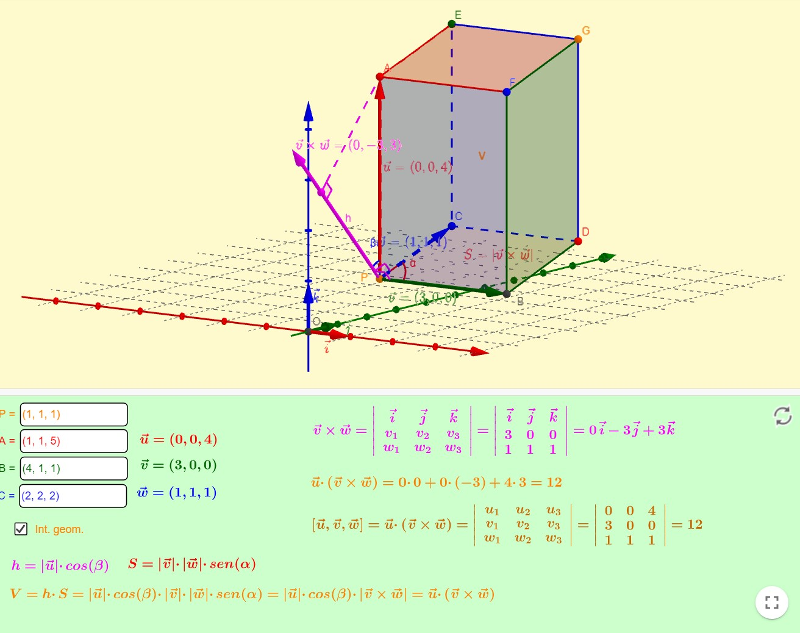

El producto triple
Contents
1.5. El producto triple#
En esta sección definiremos el producto triple, también llamado producto mixto o producto triple escalar.
1.5.1. Definición#
Definition (Producto triple)
Sean \(\mathbf{u}\), \(\mathbf{v}\) y \(\mathbf{w}\in\mathbb{R}^3\) vectores arbitrarios. Definimos su producto triple como el número real
Este número puede calcularse resolviendo el siguiente determinante:
1.5.2. Interpretación geométrica#
El producto triple de los vectores \(\mathbf{u}\), \(\mathbf{v}\) y \(\mathbf{w}\) es igual al volumen de un paralelepípedo que tiene a estos vectores como aristas adyacentes, como se puede visualizar en la aplicación de Geogebra, creada por Ignacio Larrosa Cañestro, https://www.geogebra.org/m/ZKCrbEdt, de la que extraemos la siguiente imagen:
{kind=link}
Observemos que, como es evidente, el volumen de este paralelepípedo será \(0\) si y sólo si los tres vectores \(\mathbf{u}\), \(\mathbf{v}\) y \(\mathbf{w}\) están en el mismo plano. Por lo tanto, a la inversa, podemos afirmar que \(\mathbf{u}\), \(\mathbf{v}\) y \(\mathbf{w}\) serán coplanarios si y sólo si \(\displaystyle \left[\mathbf{u}, \mathbf{v}, \mathbf{w}\right] = 0\).
1.5.3. Script en Python#
Vamos a hacer, ayudados por Numpy un ejemplo de esta operación entre vectores. Calcularemos el producto triple de los vectores
\(\mathbf{u}=(3,-5,1)\), \(\mathbf{v}=(0,2,-2)\) y \(\mathbf{w}=(3,1,1)\).
import numpy as np
import matplotlib as mp
import matplotlib.pyplot as plt
# Definimos los vectores u, v y w
u = np.array([3, -5, 1])
v = np.array([0, 2, -2])
w = np.array([3, 1, 1])
# Calculamos su producto vectorial de v y w
producto_vectorial = np.cross(v,w)
# Calculamos el producto escalar de u contra este producto vectorial
producto_triple=np.dot(u,producto_vectorial)
print('Producto triple: ', producto_triple)
# Inicialización de la representación 3D
fig = plt.figure()
ax = fig.add_subplot(111, projection='3d')
# Representación de los vectores
ax.quiver([0], [0], [0], np.array([u[0], v[0], w[0]]), np.array([u[1], v[1], w[1]]), np.array([u[2], v[2], w[2]]), color=['r','b','g','r','r','b','b','g','g'])
# Añadimos etiquetas a los vectores
ax.text(u[0]/2, u[1]/2, u[2]/2+0.1, 'u', fontsize=12, color='r')
ax.text(v[0]/2, v[1]/2, v[2]/2, 'v', fontsize=12, color='b')
ax.text(w[0]/2, w[1]/2, w[2]/2, 'w', fontsize=12, color='g')
# Ajuste de los límites de los ejes
ax.set_xlim([-5,5])
ax.set_ylim([-5,5])
ax.set_zlim([-5,5])
# Etiquetas de los ejes
ax.set_xlabel('x')
ax.set_ylabel('y')
ax.set_zlabel('z')
# Orientamos los ejes
ax.azim = 60
ax.elev = 20
plt.show()
Producto triple: 36
1.5.4. Más información#
Puedes encontrar más información del producto triple en:
La página web https://www.geometriaanalitica.info/producto-mixto-de-tres-vectores-o-triple-producto-escalar-ejemplos/. Aquí puedes encontrar ejercicios resueltos y otra interpretación geométrica muy interesante.
La wikipedia: https://es.wikipedia.org/wiki/Producto_mixto.